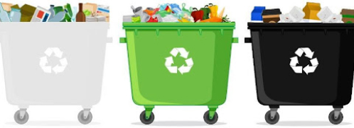

<!DOCTYPE html>
<html><!DOCTYPE html>
  <html lang="es">
    <head>
      <meta charset="UTF-8">
      <meta name="viewport" content="width=device-width, initial-scale=1.0">
      <title>Ecoactualizate</title>
      <link rel="shortcut icon" href="../assets/favicon.ico" type="image/x-icon">
      <link rel="preconnect" href="https://fonts.googleapis.com">
      <link rel="preconnect" href="https://fonts.gstatic.com" crossorigin>
      <link href="https://fonts.googleapis.com/css2?family=Montserrat:wght@200;300;400;500;600;700;800;900&amp;display=swap" rel="stylesheet">
      <meta http-equiv="X-UA-Compatible" content="IE=edge">
      <script defer src="../js/actualizate-item.js" type="module"></script>
      <link rel="stylesheet" href="../css/actualizate-item.css">
    </head>
  </html>
  <body>
    <!-- **************** Navbar **************** -->
        <section class="navbar-light">
              <div class="navbar-container container"><a class="branding" href="../">
                  <h3 class="h3 branding__title">Ecoactualizate</h3></a>
                    <button class="menu-toggler"></button>
                <nav class="nav-menu">
                  <ul>
                    <li><a class="link" href="../">Inicio</a></li>
                    <li><a class="link link--active" href="../actualizate/actualizate.html">Actualizate</a></li>
                    <li><a class="link" href="../noticias/noticias.html">Noticias</a></li>
                    <li><a class="link" href="../nosotros/nosotros.html">Nosotros</a></li>
                  </ul>
                  <div class="nav-menu__button"> <a class="btn btn-primary btn-md" href="../contribuir/contribuir.html">Contribuir</a></div>
                </nav>
              </div>
        </section>
    <!-- **************** Fin Navbar **************** -->
    <!-- ***************************** HEADER *****************************-->
    <!-- ***************************** FIN HEADER ***************************** -->
    <!-- ***************************** MAIN ***************************** -->
    <main>
      <button class="sidebar-toggler"></button>
              <aside class="sidebar">
                <nav class="sidebar-container">
                  <ul>
                    <li class="sidebar__sectiona sidebar__section--active"><a href="../actualizate/residuos.html">Separacion de residuos</a></li>
                    <li class="sidebar__sectiona"><a href="../actualizate/cinco-r.html">Cinco R Ecológicas</a></li>
                    <li class="sidebar__sectiona"><a href="../actualizate/ecodatos.html">Ecodatos</a></li>
                    <li class="sidebar__sectiona"><a href="../actualizate/recicla-en-casa.html">Recicla en casa</a></li>
                  </ul>
                </nav>
              </aside>
          <section class="contents">
            <article class="contents-container">
                  <div class="content__title">
                    <h2 class="h2 bold">Separacion de residuos</h2>
                    <p class="body light">Separacion de residuos</p>
                  </div>
                      <div class="block-content">
                        <div class="block-content__image"></div>
                            <h4 class="body extrabold">Nuevo código de colores para la separción de residuos</h4>
                            <p>Desde el 1 de enero de 2021 comenzó a regir el nuevo código de colores para la separación de residuos en el país, el cual busca simplificar el proceso del reciclaje y hacerlo más entendible con el uso de tres colores de bolsas o recipientes según sea el tipo de material.</p>
                            <p>Con la unificación de este código a nivel nacional, las personas prestadoras de los servicios de recolección, aprovechamiento y tratamiento de residuos pueden cumplir su rol de forma más eficiente y se asegura la destinación adecuada de los residuos para proteger el medio ambiente, alargar la vida útil de los rellenos sanitarios, generar empleo a partir del reúso de material, entre otros.</p>
                            <p>Se espera que, con la implementación del código de colores, la colaboración de la ciudadanía y la conciencia colectiva por nuevos hábitos de consumo y aprovechar residuos sólidos, se incrementará la cantidad de material recuperado y reincorporado a los ciclos productivos. Adicionalmente, si un ciudadano se desplaza de una ciudad a otra, los colores para clasificar los residuos serán los mismos. Así se facilitará la tarea de separar, recuperar y reusarlos.</p>
                      </div>
                      <div class="block-content">
                        <div class="block-content__image"></div>
                            <h4 class="body extrabold">Colores</h4>
                            <h4 class="body extrabold">Blanco:</h4>
                            <p>Aprovechables limpios y secos, como plástico, vidrio, metales, papel y cartón.</p>
                            <h4 class="body extrabold">Negro:</h4>
                            <p>Residuos no aprovechables como papel higiénico; servilletas, papeles y cartones contaminados con comida o papel metalizado. *En esta bolsa o recipiente también deberán disponerse los residuos Covid-19 como tapabocas, guantes, entre otros asociados.</p>
                            <h4 class="body extrabold">Verde:</h4>
                            <p>Residuos orgánicos aprovechables como restos de comida, césped y jardín, entre otros.</p>
                      </div>
            </article>
          </section>
      <button class="scroll-top-btn"></button>
    </main>
    <!-- ***************************** FIN MAIN ***************************** -->
    <!-- ***************************** FOOTER ***************************** -->
    <footer>
            <section class="footer">
              <div class="footer-container container">
                <div class="footer-social">
                  <h3 class="h3 h3-upper extrabold">EL FUTURO NO ES DESECHABLE</h3>
                  <div class="footer-social__container"><a href="https://api.whatsapp.com/send?phone=3002047922"></a><a href="mailto:sofiatobon2020@gmail.com"></a></div>
                </div>
                <div class="footer-branding"><a class="footer-branding__container" href="#">
                    <p class="body bold">Ecoactualizate</p></a><a class="btn btn-primary btn-sm" href="../contribuir/contribuir.html">Contribuir</a></div>
              </div>
            </section>
    </footer>
    <!-- ***************************** FIN FOOTER ***************************** -->
  </body>
</html>